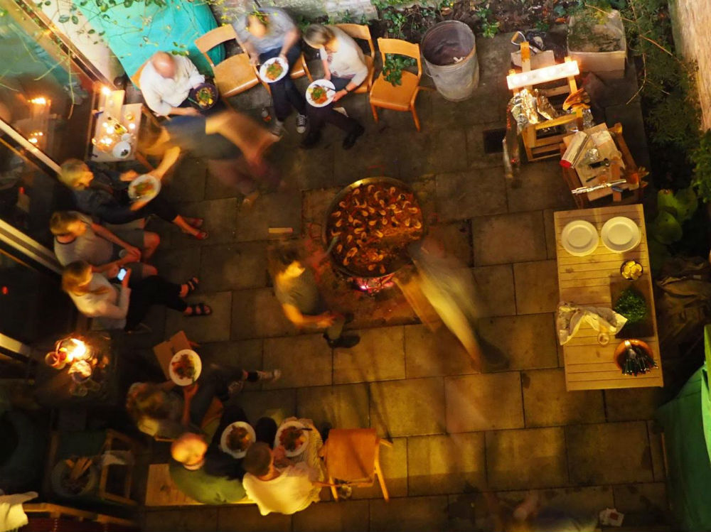
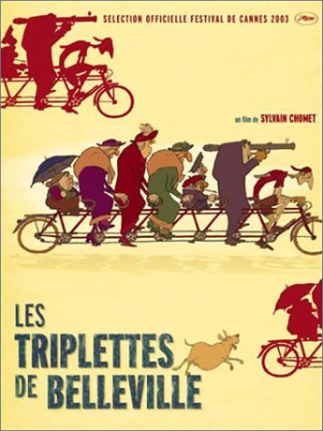

On Friday 30 September we held an evening of discussion on the theme of measurement. This was prompted by the campaign of our friend Michael Marriott to abolish the centimetre and to use only millimetres (and metres) for measurement. We gathered in the atrium at 115 to debate this and other issues in measurement.

Michael started the proceedings with powerful arguments for his case, saying that the centimetre was an unnecessary and unhelpful unit. He stressed that he was not against using feet and inches – despite the fact that the inch plays much the same role as the centimetre. When it came to a vote, his proposal to abolish centimetres was easily carried.
Robin Kinross looked at measurement in typography, focusing on how type could be measured in word-processing software. He outlined a system in which type sizes are related to linespaces (or ‘leading’) and which could avoid the whole bedevilled issue of how and in what units to measure type. Adobe, Apple, Microsoft – take notice!
Following up a manifesto statement of 20 years ago, Dan Monck talked about how the size of buildings can relate to the ways in which they are designed. Previously he had suggested that drawing constraints could provide a healthy limitation on the size of buildings, but now there are no obvious limits beyond those of manufacture and construction. He suggested a new ‘dogma’: that the size of a building should be related to the number of people who would inhabit it. He illustrated this by asking us to all join hands and extend our arms to form a maximum length …
Lucy Bristow then spoke about measurement in film making. From her experience as a camera operator she demonstrated how a focus puller would do the job, tape measure in hand.
On the walls and in the display cases we had assembled a fine collection of measures and rules, and other documents of measurement.
The talks and the disccussion were accompanied by pizzas made in a small oven in the front courtyard, and London-brewed beer.
Open call for new members
Workplace Co-operative 115 is a unique, modern, purpose-built workspace providing a collegiate and friendly environment for a diverse range of individuals (currently there are 17 of us). We are engaged in 2- and 3-D making and designing, writing, film-making, publishing and more. We work on our own projects but like to collaborate where we can.
There are a total of seven units, each of which is generously proportioned and shared with others. Typically a workspace is around 8 square metres. Affordable rents — between £120 and £220 per month, depending on unit size — include all bills, use of communal kitchen and 24-hour access. Applicants are expected to be active participants in the life of the co-op and to have it as their main place of work.
A vacancy currently exists within unit 6 on the first floor which is suitable for quiet desk-bound work and enquiries are currently being accepted. In the first instance, write to us telling us about yourself and the work you do.
space@115.org.uk
Dead good
This week’s Radio Times (27.02 – 04.03.2016) chooses new three-part series Murder written by co-op member Robert Jones as their ‘pick of the day’ — for Thursday 3 March — and ‘drama of the week’ in a glowing review by critic Alison Graham. She advises viewers to “Attend closely … in this chilling, beautifully realised tale.” Showing 9pm on BBC Two on three consecutive Thursdays: 3, 10 and 17 March. Robert’s earlier Murder aired in 2012 and is mentioned on this website here and on winning a Bafta subsequently, here.
Open call for new members
Workplace Co-operative 115 provides a collegiate and friendly environment for a diverse range of individuals engaged in making, designing, consulting, writing, film-making and publishing.
Units are generously proportioned, and shared with others; workspaces are typically 8 square metres. Affordable rents — between £120 and £220 per month, depending on size — include all bills, use of kitchen, and 24-hour access. Applicants should expect to take a participative role in the co-op and to have it as their main place of work.
Enquiries are currently being accepted. Please write to us telling us about yourself and the work you do.
space@115.org.uk
 On a balmy Friday evening, the last in August, around 30 of us — guests, assistants and members — sat in the back courtyard around a small fire, then smoking coals, over which sat a 90cm (3ft) diameter pan attended to by Simon, Jack and Jeanetta. In it, paella with squid, prawns, mussels and chorizo simmered slowly. As it cooked, we ate finely cut slices of Jamón Ibérico, thick wedges of tortilla, salty padron peppers, tomato salad, almonds and olives.
On a balmy Friday evening, the last in August, around 30 of us — guests, assistants and members — sat in the back courtyard around a small fire, then smoking coals, over which sat a 90cm (3ft) diameter pan attended to by Simon, Jack and Jeanetta. In it, paella with squid, prawns, mussels and chorizo simmered slowly. As it cooked, we ate finely cut slices of Jamón Ibérico, thick wedges of tortilla, salty padron peppers, tomato salad, almonds and olives.
Many hands made light work of preparation and later, the clearing up.

We had a film evening on the theme of bicycles on Friday 26 June. Here is a listing of the films shown or suggested.
NB: click through for videos
Worthy of note is that the BFI has a section of their website focused on the topic: player.bfi.org.uk/collections/cycling-on-film

Groningen: the world’s cycling city (Dan)

Father and Daughter, dir: Micahel Dudok de Wit (Robert B)

Kenneth Bager music video (Yi-Jen)

L’École des Facteurs, Jacques Tati (Peter)

Les triplettes de Belleville [Belleville rendez-vous], Sylvain Chomet (Dan)

Jour de fête, Jacques Tati (Robin)

TfL ‘Better by Bike’ tv ad (Ben)

Synchronised cycling (Ben)

Last month we rolled up our sleeves and gave the building its annual clean. The idea is to reach the parts that we don’t expect to be touched by the person who comes to clean here for a couple of hours every week. These parts include the front and back courtyards, awkward spots in the atrium space, and, most spectacularly, the glass top to the atrium. The afternoon session was rounded off at a drinks party in the Bull & Gate, convened to celebrate the engagement of Ben and his partner Sophie.

Two days, two events
22.01.2015: a new book, The real thing: essays on making in the modern world by Tanya Harrod published by Hyphen Press launched at a packed event in the impressive main hall of the Art Workers’ Guild in London’s Bloomsbury. Tanya spoke eloquently about her motivation for putting together within one volume, thirty-years worth of essays on craft, art and design, their overlaps and differences.
23.01.2015: Ten years in the making, Robert Bradbrook’s new film, the animation Dead Air was unveiled in three showings at the British Film Institute’s Stephen Street screening rooms. Speaking enthusiastically about the help he received from various quarters he endorsed the views of one of the film’s protagonists, Laura, who stands as an optimistic embracer of evolution and change against stasis and conservatism.
Christmas Party 2014
On 17 December last year, 28 of us – members plus ones – gathered for our annual Christmas meal, made for the first time on site.

The double-height space of unit 3, recently vacated and awaiting its new incarnation as a workshop-cum-office, became, with hastily assembled benches and an assortment of tables, a temporary staff canteen. Much effort was made: we nibbled on toasted almonds and black olives while plates of buttered sourdough with home-cured gravadlax, made by Simon, did the rounds. A whole spit-roast lamb, cooked over hot coals in the front courtyard since early afternoon was tended by Mike, Simon and Jack. Accompaniments included pungent salsa verde made by Jack and Jeannetta; fresh broad bean, fennel, tomato, cucumber, feta, dill and parsley salad made by Robert J and Peter; a warming aubergine pilaf was made by Dan. We drank two different kitchen-brewed beers made between November and December by Olly and labelled by Peter. Duncan lit brandy and poured it over three of his rich and fruity home-made Christmas puddings, while Jeannetta’s delicious mince pies were consumed with relish and appreciation.


Don’t miss the last days of The Lisa Gornick Live Drawing Show, a vivid one-woman performance in drawings and spoken word that tells the story of Lisa’s Grandma Ray, a Cockney who sometimes went posh. Intimate and innovative, the show moves between poignancy and hilarity to produce a unique and touching experience.
Dates
6, 7, 13, 20, 23, 24, 25 October:
The Betsey Trotwood
56 Farringdon Road
London EC1R 3BL
19, 26 October:
The Rose & Crown
71-73 Torriano Avenue
London NW5 2SG
All shows start at 7.30 pm and tickets are £5 on the door or bookable here